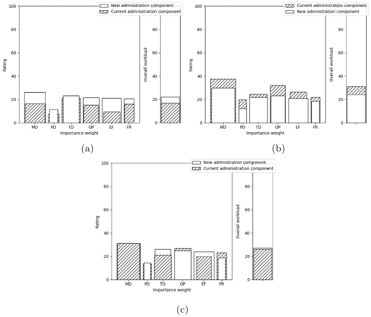
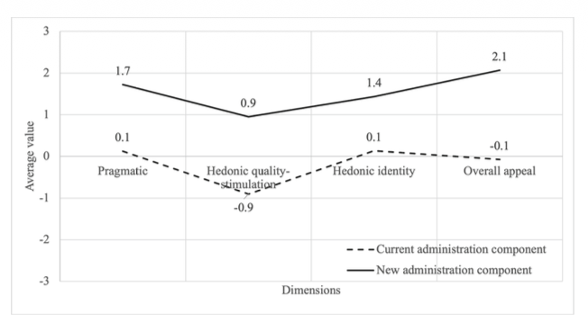

Contexte
Nous avons constaté que les recherches sur les plateformes de banques de temps se concentrent principalement sur l’expérience des membres, alors que les outils administratifs restent peu étudiés malgré leur importance pour la pérennité du système. Au sein du Réseau Accorderie, les administrateurs signalaient de nombreux problèmes d’utilisabilité avec le système utilisé depuis 2007.
Objectif
Nous avons cherché à co-concevoir un nouveau composant d’administration pour la plateforme du Réseau Accorderie. Nous avons également évalué son impact sur l’utilisabilité, l’expérience utilisateur et la charge cognitive par rapport au système existant.
Méthodes
Notre mandat était de réaliser une évaluation quantitative auprès de 17 administrateurs à l’aide des questionnaires ASQ, NASA-TLX et AttrakDiff. Les participants ont effectué des scénarios liés à l’authentification, à la gestion des membres et à la gestion des offres sur les deux versions du système. Nous avons rédigé la demande éthique, le protocole d'évaluation, réaliser les tests et l'analyse des données.
Résultats
Nous avons identifié l’authentification, la gestion des membres et la gestion des offres comme les domaines prioritaires à améliorer, puis conçu un système mieux adapté aux besoins des administrateurs. Les résultats montrent une amélioration significative de l’expérience utilisateur et une amélioration modeste mais significative de l’utilisabilité, tout en maintenant un niveau de charge cognitive comparable à celui du système existant.

Illustration des résultats du questionnaire NASA-TLX

Illustration des résultats du questionnaire AttrakDiff